ebay(上海) DSS（Data Service & Solution）部门 2016年10月-2017年5月 UX设计师
实习项目
1 Trust & Risk 原型设计 （数据展示网页高保证原型设计，已上传到ebay Wiki当中）
2 Nous Card Research (数据展示卡片UI交互规范研究并给出自己方案)
3 Seller Count Tvc Quick Mockup (数据展示网页快速设计展示)
4 Sprint Calendar Design (季度工作和重要事件节点安排日历)
5 Insight Builder & Doe Logo Design (存放在UI视觉栏内)
6 eWit Poster Design (存放在UI视觉栏内)
Trust & Risk 高保真原型设计
iHub是DSS部门负责设计和维护主要产品之一，而iHub又有14个不同子产品来提供不同层次场合的数据展示支持，Trust & Risk 是其中的一个子产品主要功能是展示交易的支付方式可靠性潜在危险性和顾客的满意程度等等。Trust & Risk 主要展示方式为各种图表和筛选栏,其中有十个页面（Off-ebay和Scorecard是接需求设计添加加上去的）。UED部门希望把iHub网页的高保证原型上传到Wiki Library上，供开发人员和产品经理参考，要是有改动，直接在Wiki Library上直接改动，减少沟通的成本和降低沟通出错的可能. Trust & Risk 是由我个人独立完成，使用工具为Axure和PS，用时两个半月，目前已上传到Wiki Library上。
原型设计制作收获：因为ebay的各个数据展示产品都已成型，UI Standard也已定义完全，各种CSS样式表也在Wiki上可以找到，日常的设计工作遵循已有习惯和规范显得特别重要。通常都是接产品经理的设计需求，设计符合相关规范的数据展示网页。数据展示网页，内容相对繁杂维度较多，ebay的数据展示网页产品层级分布清楚，其中的Global Nav占在最显眼顶端位置在最顶层可以在不同的产品间免授权相互跳转，左侧的Domain Nav在第二层可以做到当前产品的不同页面之间的跳转，数据展示区域为第三层，图表详情页为第四层，如果需要更详情信息会直接跳转到其他产品页面，很繁杂维度较多的数据类展示产品限制只用四层逻辑关系来表示清楚，使用方便很好的确立了优先级，能给用户使用感受（我在哪使用什么产品左侧的Domain Nav，可能需要使用什么产品顶端的Global Nav）逻辑性很强，体现了设计师对公司业务和数据展示的理解和熟练程度。
原型链接：Trust & Risk
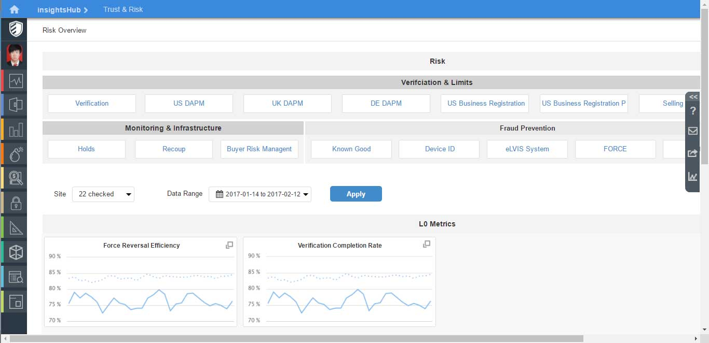
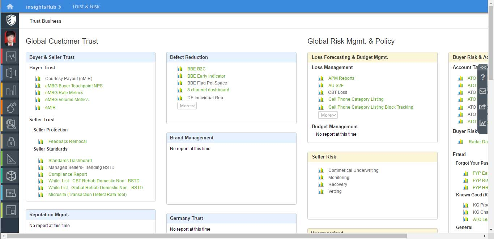
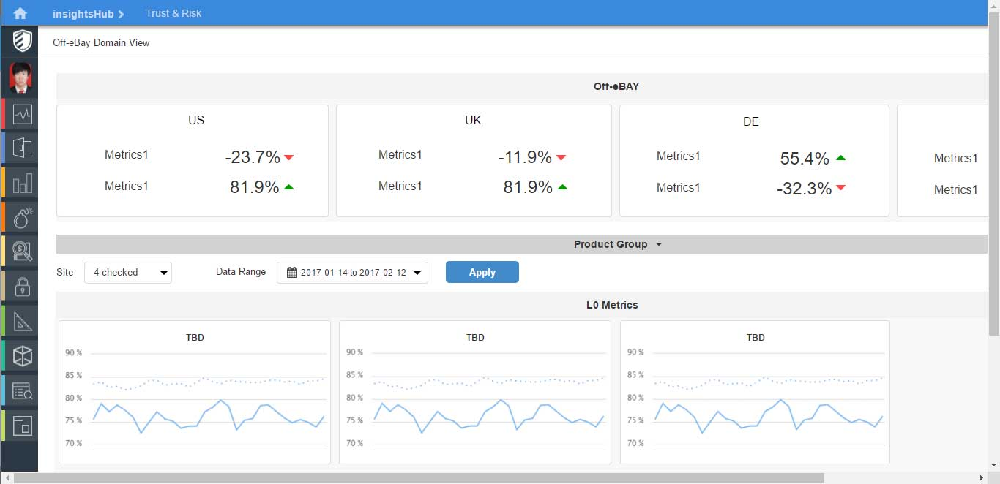
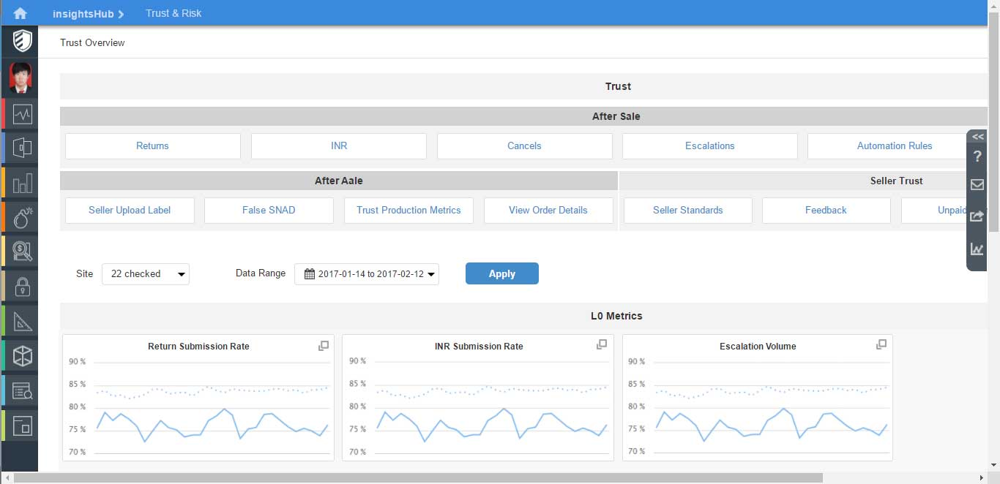
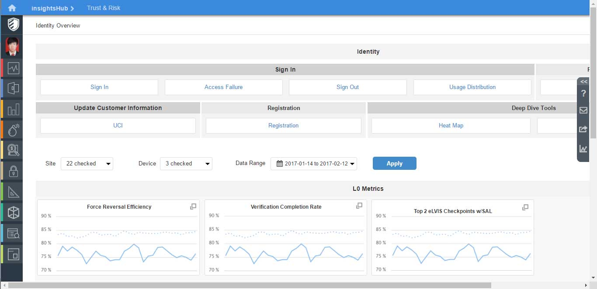
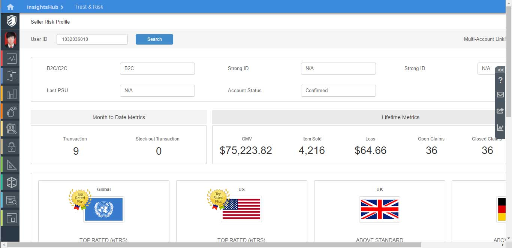
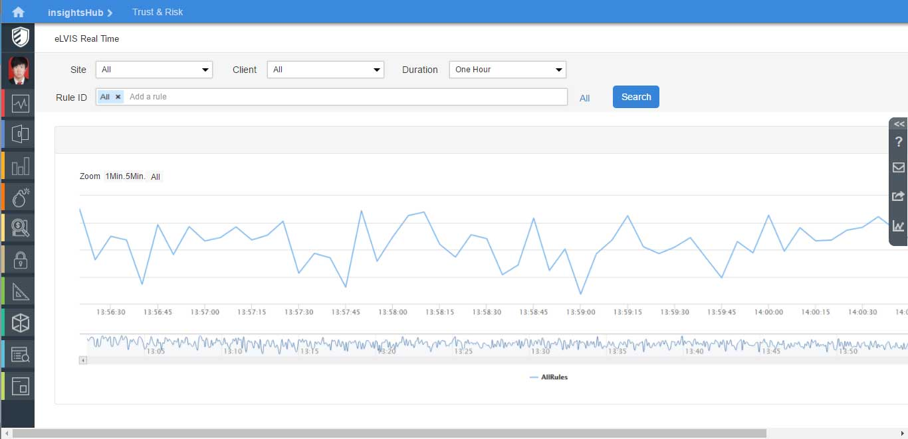
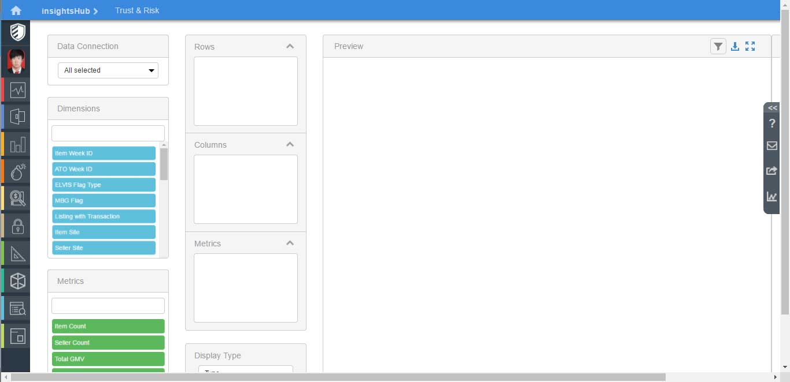
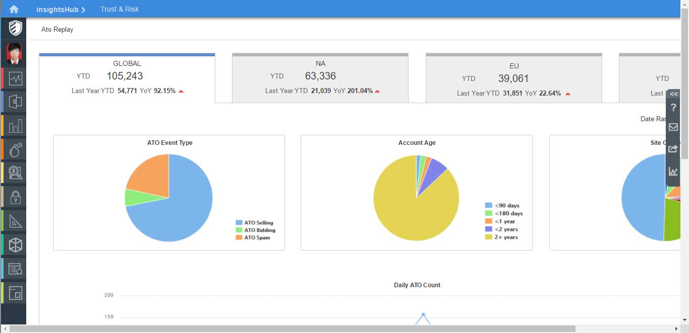
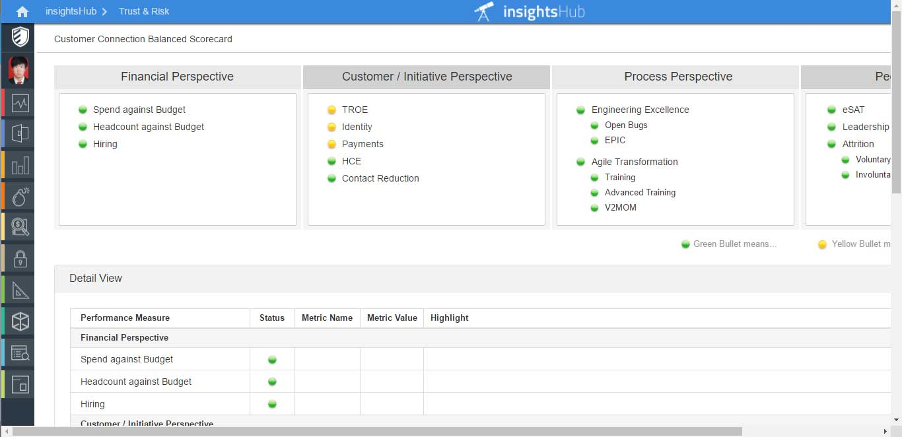
Nous Card Research
DSS网页产品展示数据图表时都是以Nous Card为载体进行展示，如上面Trust & Risk 展示的Nous Card一样.一般都会有Deepdive选项，来展示详情。UED部门计划制定Nous Card设计规范，需要添加筛选警告SQL和下载功能。一下两个截图分别为ebay的设计师May和我提出的解决方案，截屏中最右边的为确定下来的方案。
设计思考:May提出的解决方案，都是把Deepdive图标放置在图表名的后面，但在设计情况当中存在一些不足。（1）点击图表名称和点击Deepdive图标效果是一样的，但图表名称有长有短不固定，通常的名称都很长，导致Deepdive图标的位置不固定，网站显示的一致性不好。（2）第一种方案的警示图标，需要要点击才能显示警示信息，并不能很好的起到警示效果，个人认为鼠标经过就显示警示信息警示效果会好一些。（3）第三和第四种方案将图标选项放置在Card的底部，位置不够显眼，操作移动距离过长。（4）第三个方案，选项为下拉栏设计，点击后影响图表的展示。（5）方案四使用黑色和蓝色的字体来区别点击状态和不可点击状态，但是点击Deepdive图标时会弹到另外一个详情网页，操作存在误解。根据我发现的一些不足，尝试自己设计了下Nous Card的布局和规范，并做了几个方案出来，第三个的反馈比较好。
原型链接: Nous Card Research
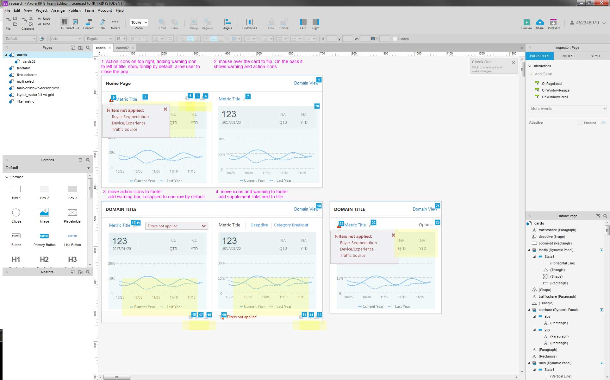
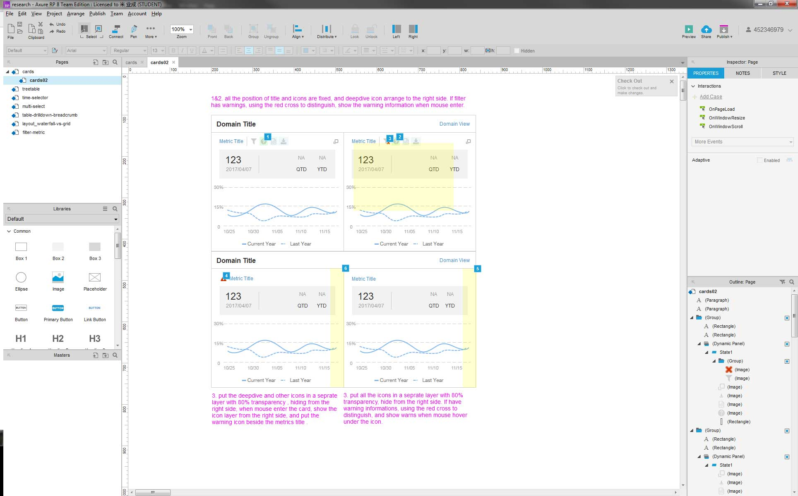
Seller Count Tvc Quick Mockup
Mockup是静态的展示网页开发效果的一种手段。接到我师傅给的需求，手绘版的一个网页，大致功能布局分布等等，完全按照DSS UI Standard来设计一个网页的开发效果，交给产品经理。依照设计规范来自己发挥，但Mockup需要尽可能多的展示细节部分，比如选中状态，下拉栏点击状态，图标不同曲线标示等等。使用工具为PS，截图工具。
设计思考:Mockup看起来制作很简单，但需要考虑UI Standard的约束，做起来其实很费时间，相当于你确定了网页的CSS样式和各种切图等等，又要尽可能的多展示细节。主要功能是交由产品经理和老板或者开发人员讨论使用，相当于开发前的准备工作。
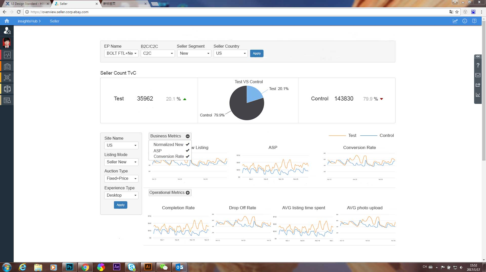
Sprint Calendar Design
设计一款季度日历，需要上传到Wiki上面，接到的任务需求是，季度日历需要体现各个任务开始和结束时间任务简述和重要的时间点（汇报日期审核日期和放假等等），我设计的是2017年第一季度的日历，提供了两个方案，横版的和竖版的，如下：
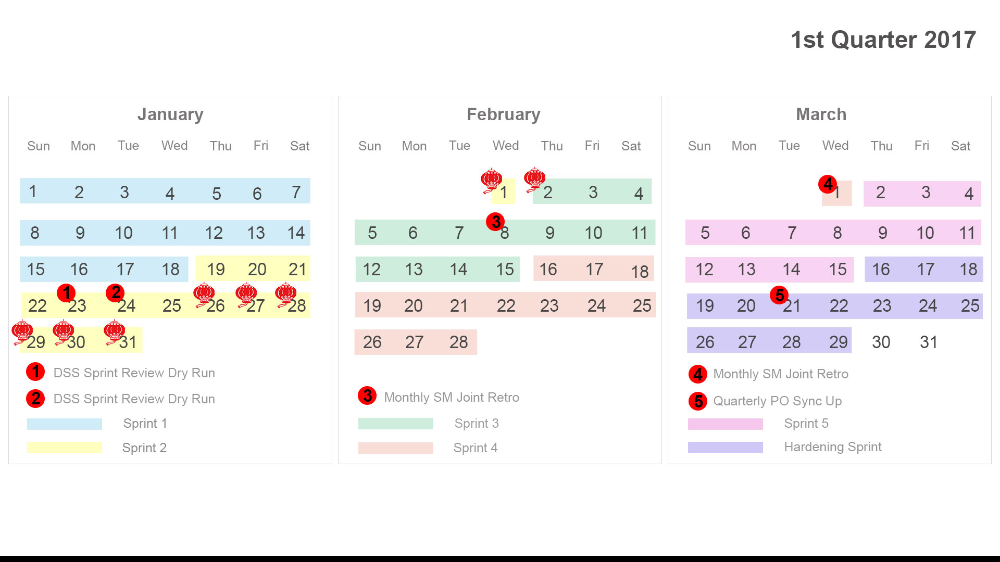
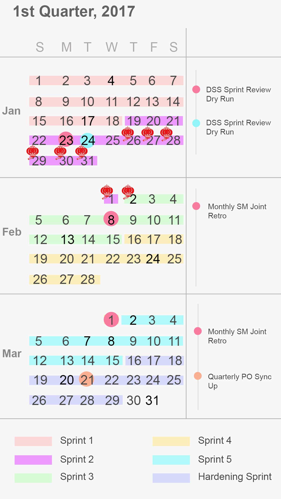